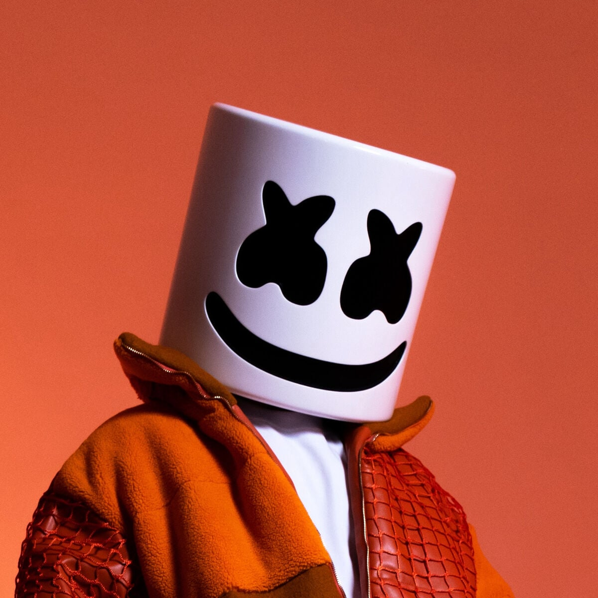

Marshmello
Born: 19 May 1992
Age:
Years Active: 2010–present
Genre/s: Dubstep, Electronic, Future bass, Hardstyle, Hip-hop, Jersey club, Trap, Festival trap, pop-punk
Label/s: Joytime Collective, Astralwerks, Buygore, Monstercat, Owsla, Geffen, Casablanca, Republic, Columbia
Member of: The Binches, Underbrook
Christopher Comstock (born May 19, 1992), known professionally as Marshmello and formerly as Dotcom, is an American DJ and record producer. His songs "Silence" (featuring Khalid), "Wolves" (with Selena Gomez), "Friends" (with Anne-Marie), "Happier" (with Bastille), and "Alone" have each received multi-platinum certifications in several countries, and peaked within the top 40 of the Billboard Hot 100. His musical style includes groove-oriented, synth and bass-heavy electronic dance music.
Comstock first gained a following on SoundCloud as Dotcom in 2010 initially posting mashups, remixes, and singles and gained a following in his first few years. He gained recognition as Marshmello in early 2015 from publishing remixes online. His debut studio album, Joytime (2016), included his debut commercial single, "Keep It Mello". Released in May of that year by indie label Monstercat, his single "Alone", peaked at number 28 on the US Billboard Hot 100 and received quintuple platinum certification by the Recording Industry Association of America (RIAA). In 2017, after releasing the singles "Chasing Colors", "Twinbow" and "Moving On", Comstock collaborated with R&B singer Khalid to release the single "Silence", which received platinum or multi-platinum certifications in eight countries. Later that year, he saw similar success with his collaborative single with singer Selena Gomez, "Wolves".
In 2018, he released "Friends", a collaboration with British singer Anne-Marie. Months later, his second studio album, Joytime II (2018), was supported by the singles "Tell Me" and "Check This Out". "Happier", a collaboration with British band Bastille, was released that August and became his highest-charting song on the Billboard Hot 100, peaking at number two. In 2019, he earned US$40 million, ranking second on the list of highest paid DJs compiled by Forbes. In 2020, he and American rapper Juice Wrld released "Come & Go", from the latter's posthumous album Legends Never Die, matched "Happier" as his highest-charting song on the Billboard Hot 100. In 2021, his fourth album, Shockwave earned him a Grammy nomination.
Comstock wears a custom white helmet, resembling a marshmallow, for public appearances and in his music videos. His identity was initially unknown to the general public, but was confirmed to be Comstock by Forbes in April 2017. Aside from his work as Marshmello, Comstock founded the pop-punk band Underbrook, for whom he is lead vocalist.